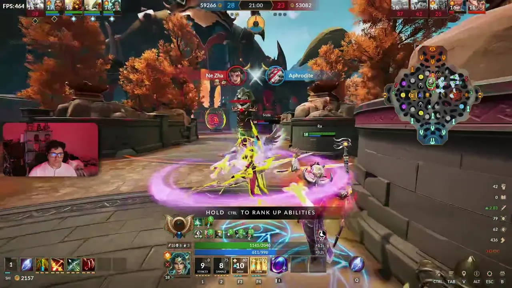
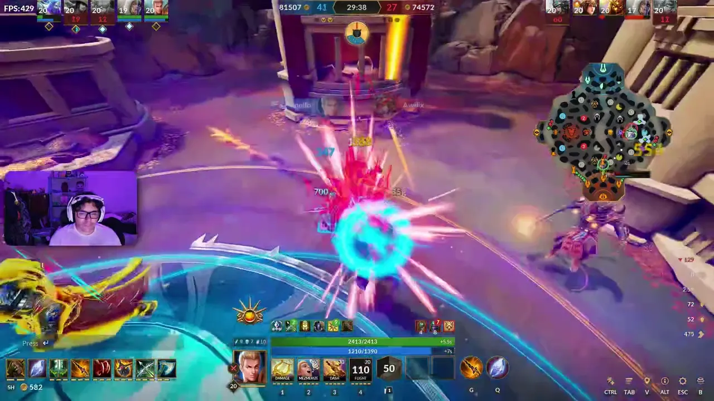
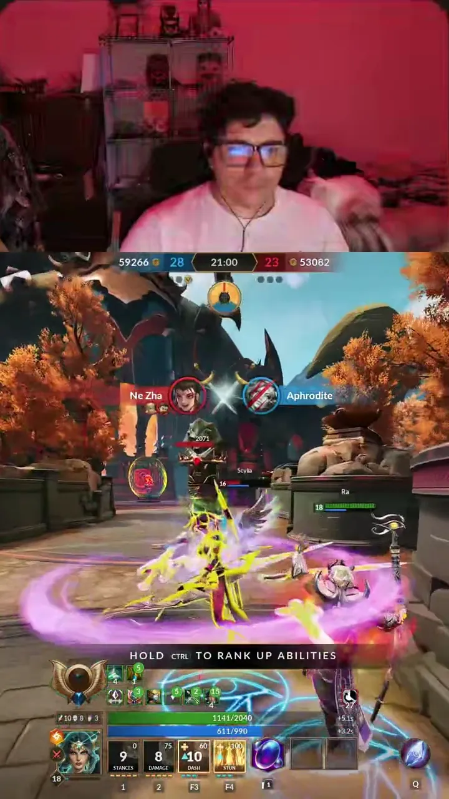

Transmite en todas partes. Manda con tu voz.
MushHub conecta OBS con Twitch, Kick, YouTube y TikTok, junta tu chat y guarda tus mejores jugadas mientras tú juegas.
Gratis en lo esencial y 7 días con todo desbloqueado. Windows 10 y 11.
- Twitch
- Kick
- YouTube
- TikTok
En vivo
Transmitiendo 1:12:40 OBS conectadoMulti-Chat
Voz e IA
MushAI escuchando- 1Directo: buenas jugadas, risas y caos
- 2¿Llego a Diamante hoy? | SMITE 2
- 3El chat decide mi build | SMITE 2
Clips y edición automática

Quadra kill con el chat explotando01:12:40 · 9 s9/10
Doble kill defendiendo la base01:48:05 · 9 s8/10
"¿Qué fue eso?" · el chat se ríe00:41:12 · 12 s7/10
Editor visual vertical
Vista de la app con una partida real de SMITE 2. Chat y cifras de ejemplo.
Una app para Windows que hace el trabajo aburrido de tu stream.
MushHub es una app gratuita para Windows para streamers de Twitch, Kick, YouTube y TikTok. Se descarga y se instala: no necesitas crear una cuenta para usarla y esta página es pública. Controla OBS con tu voz, junta el chat de todas tus plataformas, prepara y aplica los títulos de tu directo, y encuentra y guarda tus mejores momentos con una IA que corre en tu PC.
Tus grabaciones, clips, chat y ajustes se quedan en tu computadora. Las cuentas se conectan con la autorización oficial de cada plataforma: MushHub nunca ve tus contraseñas.
Dile "Asistente" y deja el teclado.
Ponle el nombre que quieras: Asistente, Jarvis o Mushi. Funciona en español o inglés. MushAI entiende frases normales y corre en tu PC, así que es privada y no cobra por pregunta.
- Títulos con un comando
- Te propone opciones y eliges "la tres, aplícalo".
- OBS sin tocarlo
- "Cambia a Game", "mutea mi micrófono".
- Clips al instante
- "Clip" guarda lo que acaba de pasar.
- Siempre preguntas tú
- Nada se publica sin tu confirmación.
- 1Directo: buenas jugadas, risas y caos
- 2¿Llego a Diamante hoy? | SMITE 2
- 3El chat decide mi build | SMITE 2
Cuatro chats. Una sola columna.
Twitch, Kick, YouTube y TikTok llegan juntos, con sus emotes. MushHub los lee en voz alta si quieres, y lo que escribes sale a todas tus plataformas a la vez.
Multi-Chat
OBS obedece sin que lo toques.
Cambia de escena, mutea fuentes, inicia la grabación o el Replay Buffer con la voz o con un atajo. Solo controla las fuentes que tú autorizas.
Tus mejores jugadas, guardadas solas.
MushAI escucha tu grabación, mira cómo reaccionó el chat y te propone los momentos que valen la pena, con subtítulos y en vertical para TikTok, Reels y Shorts. Estos son clips de un stream real.
Quadra kill con el chat explotando
01:12:40 · 9 s · guardado con "Asistente, clip"
Vertical automático: tu cámara arriba, la jugada abajo, subtítulos incluidos.
Listo en tres pasos.
- 1
Descarga e instala
Un instalador para Windows. Sin crear cuenta.
- 2
Conecta OBS y tus cuentas
Twitch, Kick y YouTube con su autorización oficial. TikTok con tu usuario.
- 3
Di "Asistente"
Prepara tu título, cambia de escena y guarda clips con la voz.
Empieza gratis. Hazte Founder.
Free
$0
para siempre
- 7 días de prueba con todo desbloqueado
- Voz para OBS, Multi-Chat y títulos
- 2 búsquedas de MushAI y 5 clips verticales por semana
Mensual
Desde $8
Supporter 8 USD · Creator 15 USD al mes · cancela cuando quieras
- MushAI y clips sin límite semanal
- Se activa solo con tu correo de Ko-fi
- Apoyas que MushHub siga creciendo
Founder
$80 USD
un solo pago
- Creator de por vida, sin mensualidades
- Todo ilimitado, también lo que venga
- Insignia Founder dentro de la app
- Se activa en Ajustes → Membresía con tu correo de compra
Gracias a todos los que ya son Founder. Inversionista fundador: Squiper90.
Cómo usa MushHub tu cuenta de Google (YouTube)
Solo si tú conectas tu canal de YouTube (es opcional), MushHub usa la autorización oficial de Google para ver si estás en directo y cuántas personas te ven, mostrar y leer en voz alta los mensajes del chat en vivo, y cambiar el título de tu transmisión únicamente cuando tú lo confirmas. MushHub no sube, borra ni publica videos, no lee tu correo y no comparte ni vende tus datos. Los datos se procesan en tu PC. El uso de la información recibida de las APIs de Google cumple la Política de Datos de Usuario de los Servicios de API de Google, incluidos los requisitos de Uso Limitado.
Puedes quitar el acceso cuando quieras en myaccount.google.com/permissions. Aviso de privacidad completo.
Tu próximo stream empieza aquí.
Instala MushHub, conecta OBS y tus cuentas, y di "Asistente".
Descargar MushHub gratisWindows 10 u 11 de 64 bits. OBS Studio 28 o más reciente con el servidor WebSocket activo. Para la IA local se recomienda una tarjeta de video de 8 GB o más.